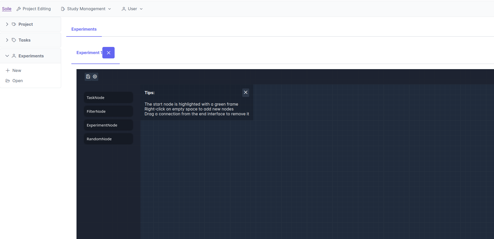
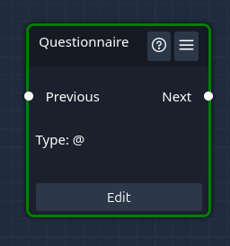
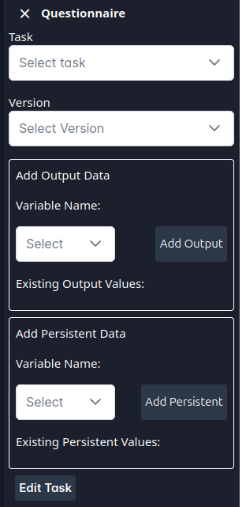

Quickstart : Experiment
This guid shows you how to set up a new experiment and how to use it in a Project Let’s begin
Initialize a new Experiment
To create a Experiment you go to Project Editing -> Experiments -> New, which will lead you to the following view

In an experiment, you can combine multiple tasks into a specified group or a specifc order. E.g. if you for several projects, want to have the same questionnaires in the beginning, instead of adding them to the project each time, you can add them into an experiment and just add the experiment to the respective projects. An experiment can also be used to create a group of tasks, that you want to randomize in your project (i.e. you want participants to go through all of the tasks, but in a random order).
Start building your experiment
For this tutorial we will create a simple experiment with two tasks.
Add an Experiment
To create A Task Node in he experiment click on the TaskNode Button on the left. You can also drag and drop a Task node onto the experiment area. You can rename the Element by clicking on the Thre Bar Manu, and selecting Rename.

Modify your Experiment
Let’s rename it to questionnaire (as was done before). Currently, this task is just a place holder. We will now assign the actual task we want to perform to it. This can be done by clicking ‘edit’ in the Task Node.

We will create this task as a questionnaire, with the actual task being the “QuestionnaireExample” and the Version being the “Initial Version” of this task.
For this tutorial, we wil ignore the other settings (output data and persistent data). Those will be detailed in the Project Tutorial.
Now that we have added our questionnaire, let’s also add a second task, call it “Experiment” and assign it the “ElangExp” task.
Now we have to connect our two tasks to indicate the “normal” order of the tasks within the experiment. The green border around our Questionnaire task indicates that this is the normal starting task of the experiment. draw a line from the next field of the Questionnaire to the previous field of the Experiment node.
Saving your Experiment
Let’s give our Experiment a name (click on the cog wheel in the upper left) and select a name. You can opt to have the experiment be a private experiment, which would hide it from other researchers. By default all experiments are public, meaning all users of the platform can benefit from new experiments created by other researchers.
Finally click on the floppy disk icon to save the experiment. As with all other elements on the platform, each saving creates a new Version of the element, allowing you to always go back to what you had before.
Test your experiment
After you have saved an experiment, you can pilot it, to see what would happen when you walk through it. To do so, click on the arrow button in the upper left side.